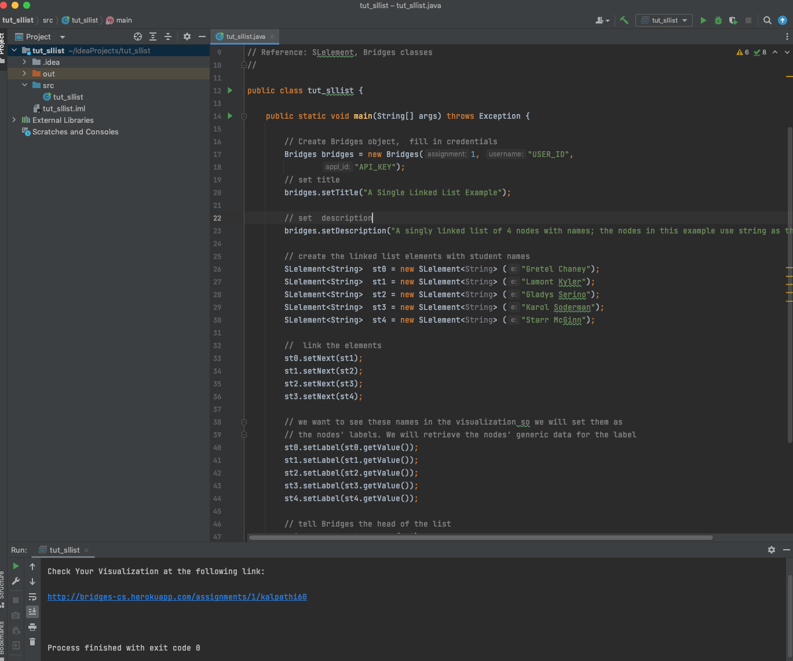

Step 1: Install IntelliJ IDE
- If you do not have IntelliJ
installed, download it from the
IntelliJ IDEA site and install it on your computer.
- IntelliJ comes with Java JDK 1.8, or you can configure it
to point to your Java installation.
- Open IntelliJ application after installation
|
Step 2: Create Bridges Account
- Visit the Bridges
main page
and create yourself an account by clicking the
login button on the top navigation bar.
Please ensure that
your user id is devoid of spaces, as it will be
used as part of the web link for your projects.
After creating your account, click
on your profile name in the upper right corner to
view your profile. Once in your profile, you will see your
API Key; you will need this API key in part 2
of the tutorial(as well as in every BRIDGES program
you write). NOTE: Make sure to remember
your password. There is no password recovery option,
and you can only have one account per email address.
|
Step 3: Import Jar File into project
- Download the Bridges.jar file (current version is 3.4.0) from
Bridges home page and save it somewhere convenient
on your drive.
- On IntelliJ, right click on your project and select
Open Module Settings Select Modules which will
show all the modules/Jars currently loaded.
- Click on the + button on the bottom left of the
window, and select Dependencies tab . Navigate
to the folder containing the BRIDGES Jar file and load it in as a Jar archive.
- You should now see the BRIDGES Jar file as part of the
project. Hit Ok to get rid of the window.
|


|
Step 4: Create, Build, Execute a BRIDGES Java Program
- Open File-->New-->Project
- Go to this
BRIDGES Tutorial and copy/paste the Java tutorial program into
the main window by creating a new file. Set the file name to match the class name
- Set an assignment number, and your credentials in the line that creates
the Bridges object at the beginning of the program.
- Run the program by hitting the Build Project (hammer icon) followed
by hitting the Run (Play) button .
- You will see a link printed on the console. Use that to visualize the
output as seen in the image.
|

|